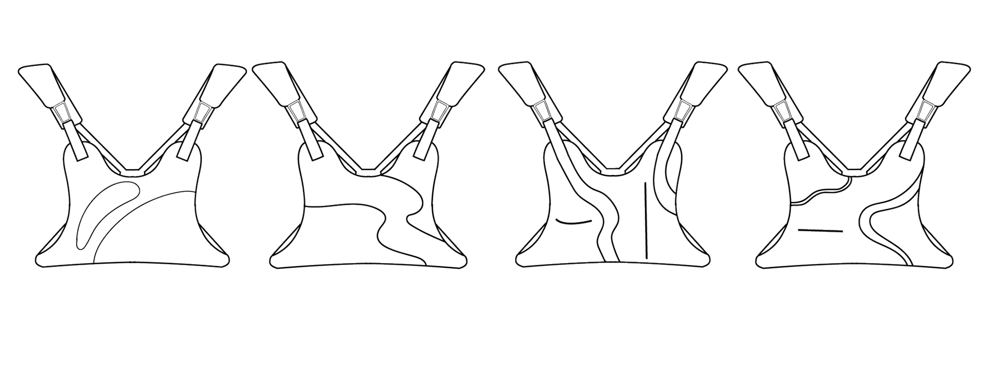

Summit
The Summit Chest pack is designed for hiking, skiing, running, and anything that brings one closer to
nature.
Made with
the hardware and lining of my childhood backpack, and the airbags from cars. It has a net positive footprint
on
the
environment.
The idea for Summit came to me one day while skiing this past season. I always used to bring my backpack
with me
on
the
mountain. I liked having a few pockets to hold my phone, wallet, and maybe a snack or two. But my backpack
made
me
super
uncomfortable while sitting on the chair lift. Thus the "chest pack" idea was born.
I wanted to make a product for nature, inspired by nature. But above all, I wanted a product that was nice
to
nature.
Ideation began.

The Final 3 Designs
Three designs stood after rapid sketching inspired by rivers, lava, and mountains respectively. The model
shown
below is
"rivers" as you can see it wasn't a good fit.
This was all cool, but how do you make an actually sustainable garment? My answer came from an unlikely
place...
car
airbags.
Okala Impact Assessment:
Summit
(Air Bag)
Silicone-coated Nylon
(1) x 60 = -60
Nylon Coil Zippers
(2) .135 x 60 = 6
Poly Vinyl Clips (PVC)
(4) .2 x 39 = 7.8
(From Bags) Nylon Fabric
.3 x 60 = -18
Pull Tabs (Aluminum)
(3) .117 x 39 =4.56
Total Impact/ Score
= -65.64
Making the prototypes for Summit.
Steps for production:
1. Speak with the client
2. Acquire a used bag
3. Understand the needs of the product
4. Sketches/Dismantle Bag to understand material limitations
5. Sew together adding Nylon Zippers and Airbag materials as needed